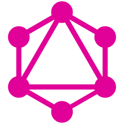

GraphiQL ExplorerClick a saved session to open it. New creates an empty session in a local workspace and opens it. Rename changes its display name; Remove hides that session from Explorer and keeps its file. Rename or delete the actual file in Orca’s file explorer.